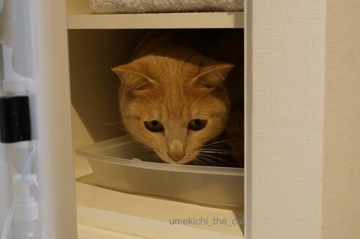
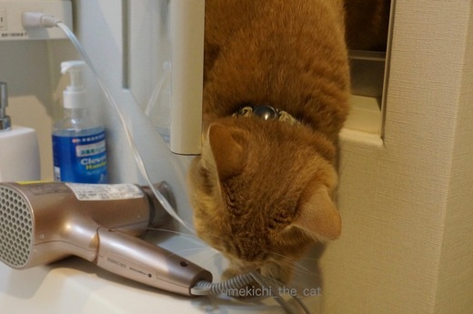
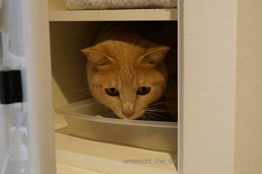
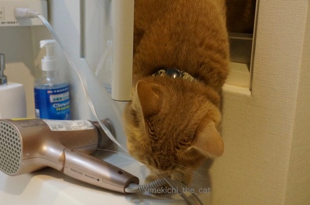

梅吉の日課 [梅吉]
朝の身支度の時間には必ず梅吉さんがお付き合い。

ドライヤーの入っていた場所に陣取る。
![[猫]](https://blog.ss-blog.jp/_images_e/101.gif) わしはきょういちにちここにいてるで。
わしはきょういちにちここにいてるで。

はいはい、分かりましたよ、と扉を閉めるとこの世の終わりみたいな声で鳴く・・・・

しめるなんていけずやな〜
わしびっくりや。

いけずされるからばしょかえとこか・・・

あ、ここええかんじや。

ここにしとくわ。
全くもってうれしい日課です・・・・
 ↑ガブッと一押し↑
↑ガブッと一押し↑
2月３日は例の紙を持って近所の神社の節分祭に行ってきました。
仕事が終わってからも行けるように夜まで受け付けをしています。
提灯に灯りも入ってなかなかの賑わいです。
篝火もあって「陣中」という言葉が浮かびます。
雰囲気があってかっこいいでしょう？
形代の用紙には梅吉の名前も書き込みました。
この先一年平穏に過ごすことができますように。
お振る舞いのぜんざいも美味しかったです。

ドライヤーの入っていた場所に陣取る。

はいはい、分かりましたよ、と扉を閉めるとこの世の終わりみたいな声で鳴く・・・・

わしびっくりや。



全くもってうれしい日課です・・・・
2月３日は例の紙を持って近所の神社の節分祭に行ってきました。
仕事が終わってからも行けるように夜まで受け付けをしています。
提灯に灯りも入ってなかなかの賑わいです。
篝火もあって「陣中」という言葉が浮かびます。
雰囲気があってかっこいいでしょう？
形代の用紙には梅吉の名前も書き込みました。
この先一年平穏に過ごすことができますように。
お振る舞いのぜんざいも美味しかったです。

カフェオレ色の梅吉

梅吉 2023年8月10日 永眠


梅吉と出会った譲渡会

犬猫の理由なき殺処分ゼロ
妄想広告
UMEKICHI 光

爆発的に早い！
時々攻撃的！
Thanks to Mr.Boss365
爆発的に早い！
時々攻撃的！
Thanks to Mr.Boss365

毎朝梅吉君が身支度の見守りをしてくれるんですね！
ドライヤーをしまう場所、洗面ボウル、梅吉君、つねに困りポイントをキープかな？
自分で自分の名前の綴りを確認するほどですのに、嬉しいです(ポッ
ハンドルネームが思いつかなくて、ビルゲイツをもじって適当につけたの(°_°)
by BillK-ko (2017-02-05 17:37)
あ、うちと同じ洗面化粧台だ:-)
by tama (2017-02-05 18:51)
忙しい朝の付き添いは、最小限に願いたいですよね～^^;
それにしても、いい位置にいい大きさの棚がありまりますね！
ウチのは閉じ込めても絶対鳴かないので、下僕は大慌てで探し回らねばなりません(-_-メ)
by ゆきち (2017-02-05 20:42)
梅吉さん、かまってニャンですね。
カメラ目線だし（笑）
by kiki (2017-02-05 20:53)
えっ、その場所に移動ですかっ！？ ^^;
ぜんざい、美味しそう。温まりますね。
by yes_hama (2017-02-05 21:40)
可愛い日課ですなー
構ってちゃん梅吉さんが言葉遣いとは裏腹で
可愛いです！！
by sumi-cyan (2017-02-05 21:42)
これが人間だったらちょっとムッとしますが梅吉ちゃんにこんな風にされたら逆に歓迎ですね！私もやってもらいたい！
by みぃにゃん (2017-02-05 22:13)
にゃんこはどこでも入っちゃいますよね＾＾
身支度のお手伝い可愛いけど、寝坊したときは大変そうですね(^^;
by Moon (2017-02-06 02:50)
え？これが毎日のルーチンなんですか？![[ムード]](https://blog.ss-blog.jp/_images_e/155.gif)
かなりめんどくさい梅吉さんですなー(^_^;)
まあ可愛いから許すけどー
by よーちゃん (2017-02-06 07:45)
朝の忙しい時間に(;^_^A
それでも許されるのが可愛い子の特権ですね♪
by きぃ (2017-02-06 08:39)
扉を閉められたときに鳴く声
めちゃめちゃ想像できます(笑)
かわいいねえｗｗ
by リュカ (2017-02-06 10:43)
梅吉さん、扉しめられたら泣くんですねぇ(^O^)
うちは泣かないので、そっと扉を開けると「なんで開けるの？」と
不思議そうな顔をされます^^;
「寛いでたのにごめんm(_ _)m」とまた扉を閉めますｗ
by ニッキー (2017-02-06 12:51)
BillK-koさん＞わー！ビル・ゲイツがハンドルネームの由来とは！！
テーマが大きいわ。
世界を手中に収めようとしていますか？BillK-koさん。笑
ご自分でハンドルネームを書く機会ってほとんどないですもの
要確認はよくわかります。
私は自分のブログ名を時々確かめます。
梅吉日記〜梅仕事〜？←すごい間違い。
朝の身支度時は私が次に使いたい困りポイントに先回りする梅吉。
野生の勘も良いけどもっと違うところで発揮していただきたい・・・
tamaさん＞あら偶然。なんかてれますーw
ゆきちさん＞梅吉も「いい位置にいい大きさの棚やん・・・」
（わしが遊ぶのに）
と思っているようで油断して扉を開けっ放しにしていると
中のタオル類を全部出すお手伝いをしてくれます。涙
kikiさん＞分かっていらっしゃる・・・・
梅吉はものすご〜〜〜いかまってニャンなのです。
人が何かしていると必ず参加！
人好きは犬の如し・・・・
yes_hamaさん＞そうなんです・・・この場所が大そう気に入られたそうです・・泣
ぜんざいおいしかったです。
神社の氏子さんのおばちゃんたちお料理上手！
sumi-cyanさん＞毎日扉を閉められるのに必ず入る・・・
実は楽しいんじゃないかと疑っています。
みぃにゃんさん＞この日はまだ可愛いバージョンの日課だったのですが
これに肩に飛び乗る、ドライヤーのコードにじゃれまくる・・・
が加わるとさすがに「あっちいってや〜！」てなるんですよー。笑
Moonさん＞そうそう、焦っている時ほどなぜか絡んでくると。
ねこ、あるあるでしょうか。笑
よーちゃん＞ルーチンなんですよー。
濡れた洗面ボウルを拭いたり居場所を作ったり
かなーり面倒なんですがこれがないと寂しくて・・・
来てくれないと裏切られた気持ちがするめんどくさい飼い主です。笑
きぃさん＞なぜか忙しい朝にテンション高い梅吉なのです。
このあと廊下や寝室を爆走する可愛い子♪ふふ。
リュカさん＞もうお腹の底から力一杯の声出すよねー。
おたけびーーーって感じですw
ニッキーさん＞ものすごい声で鳴くくせに扉を開けると
「へ？なんかあったん？」て顔して素直に出てこない・・・
閉めるとまた鳴く。
面倒なので試してませんが無限ループ状態になる予感がしますよ^^;
柿の種ペッパー風味見つけられませんでした。
代わりにぶどう山椒味、なるものをゲットしましたよ。
by ちぃ (2017-02-06 16:03)
日課なのですね。う～んそれは大変かも(゜o゜)でも扉閉めちゃうなんてちぃさんやりますな(^_^;)
by palpal (2017-02-06 16:32)
palpalさん＞もう飼い主も癖になって梅吉日課が無いと
寂しい域に達しましたよー。
ふふ、困った様子を見るのが結構好きなの。
すぐレスキューしちゃうけどw
by ちぃ (2017-02-06 17:15)
ついつい意地悪したくなりますね＾＾
まろんは洗濯機に入るのでフタ閉めたら喜びます。
by じゅらまろ (2017-02-07 16:05)
じゅらまろさん＞そうそう、困った時にどんな行動取るかって
気になりますよね〜。
まろたんの喜び、絶叫？笑
by ちぃ (2017-02-07 17:38)